2025
CONO
CONO is a thoughtfully crafted app for coffee lovers and professionals — a place to belong, for those whose days begin with coffee and stories. Inspired by friends who see brewing coffee not just as a daily habit but as a personal ritual, CONO provides a space to log, reflect, and share.
Whether you're behind the bar or at home, CONO helps you document your brews and revisit your journey — not just through data, but through memories, visuals, and emotions. It's designed for those who care about the quiet details: the flavor of a single origin, the method of brewing, the feeling behind a cup.
By combining flexible journaling tools, a searchable log system, and a welcoming community space, CONO turns fragmented notes into meaningful reflections. It honors both the routine and the creative expression behind every brew — and offers a space to grow, one cup at a time.
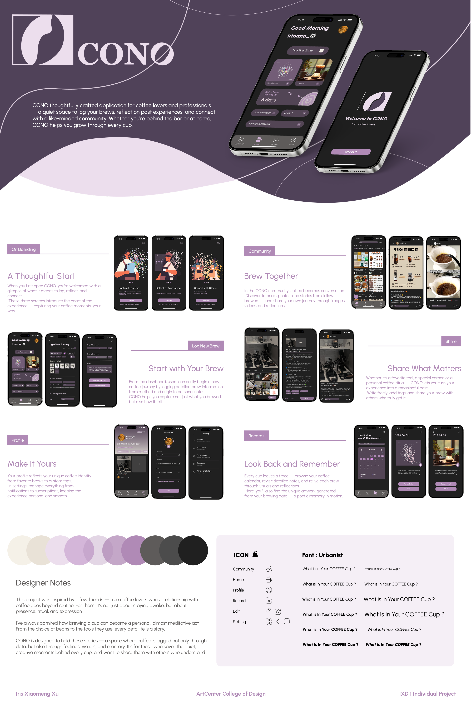
Project Overview
Overview
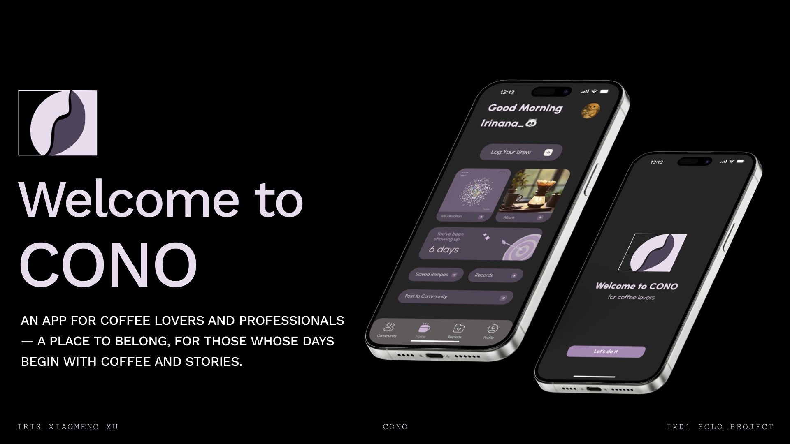
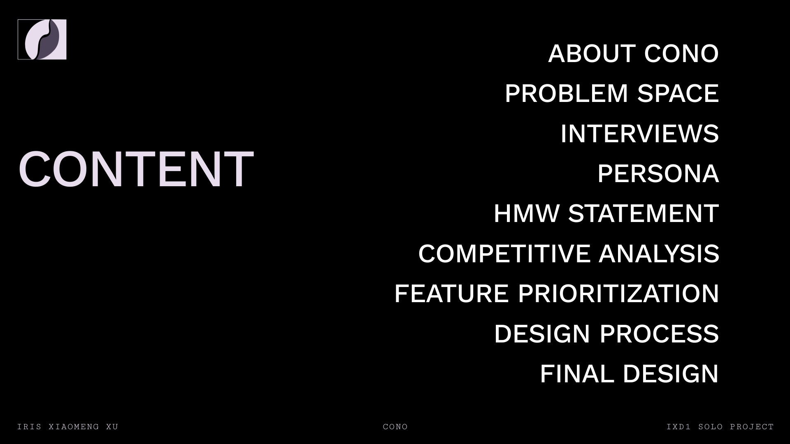
About CONO
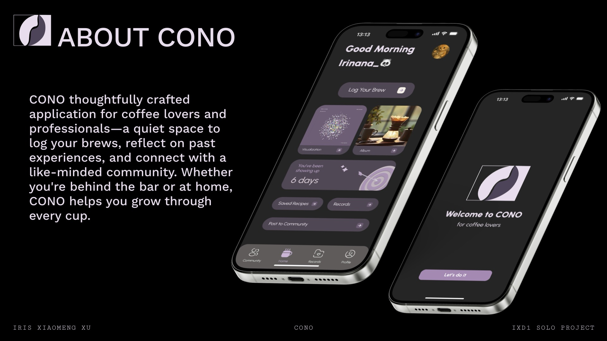
Understanding the Product
Problem Space
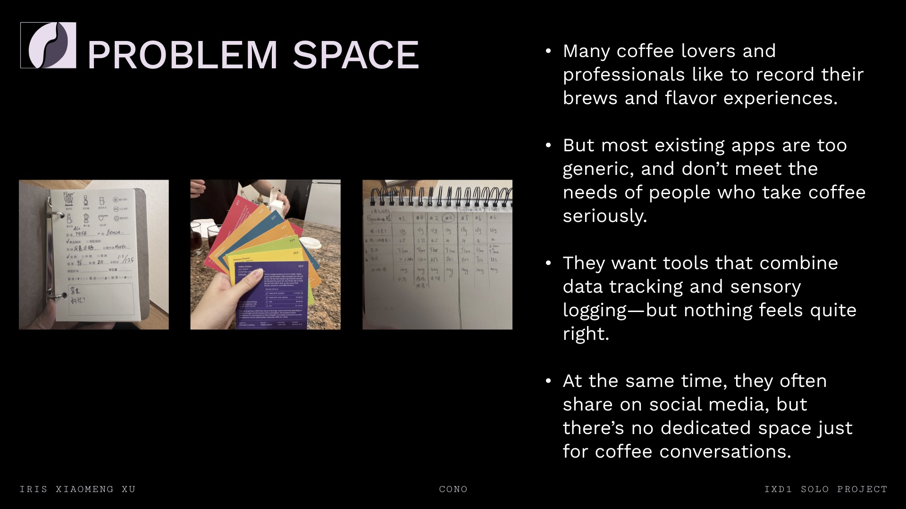
Interviews
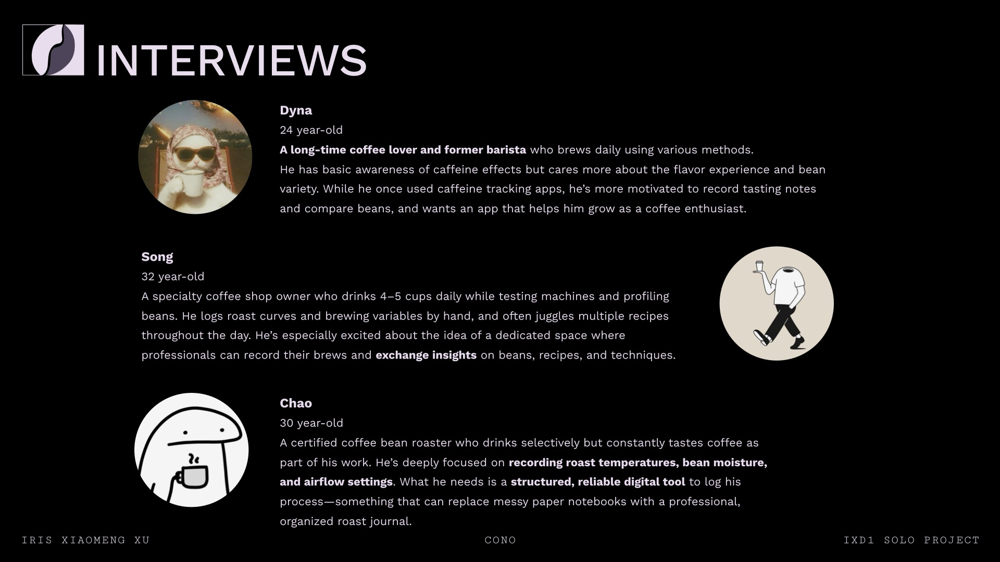
Persona
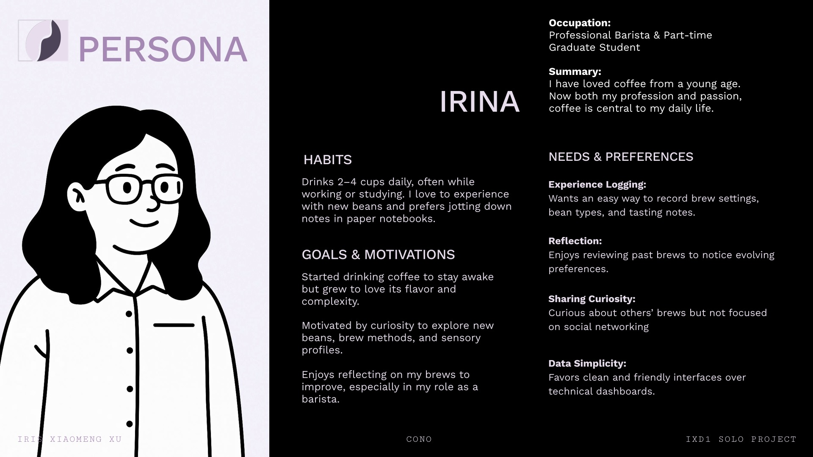
HMW
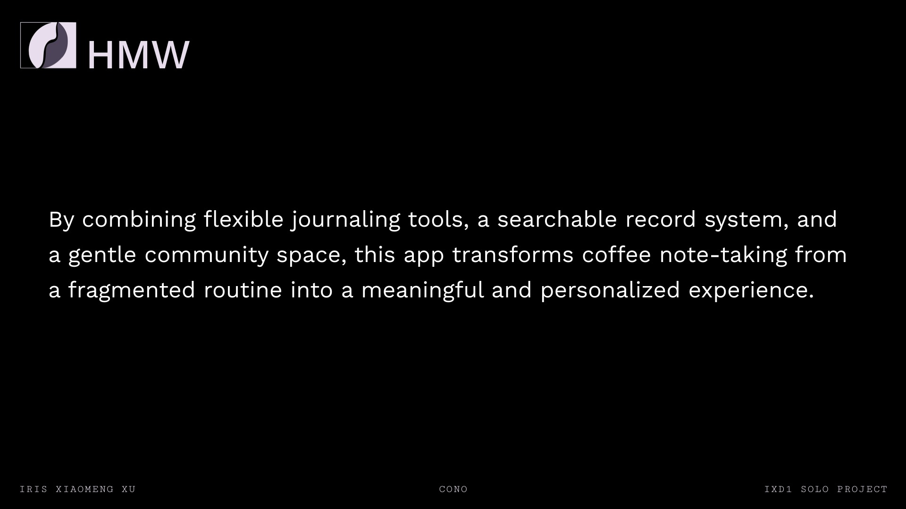
Competitive Analysis
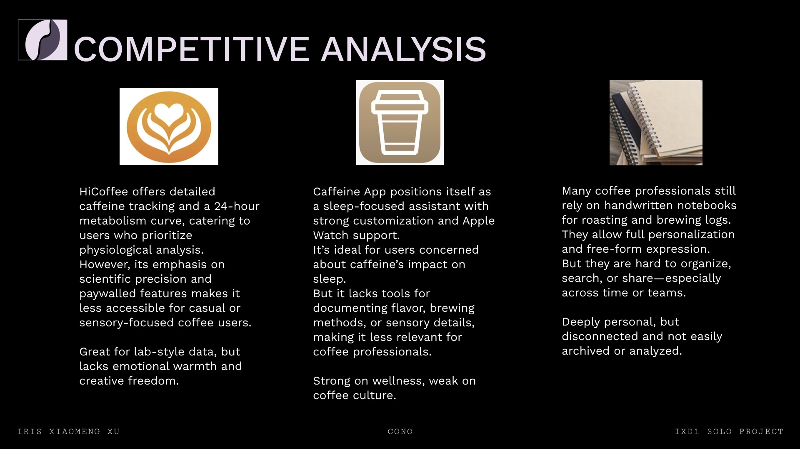
Design Development
Feature Prioritization
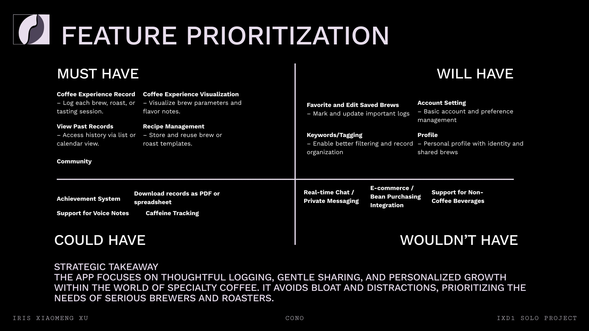
Design Process
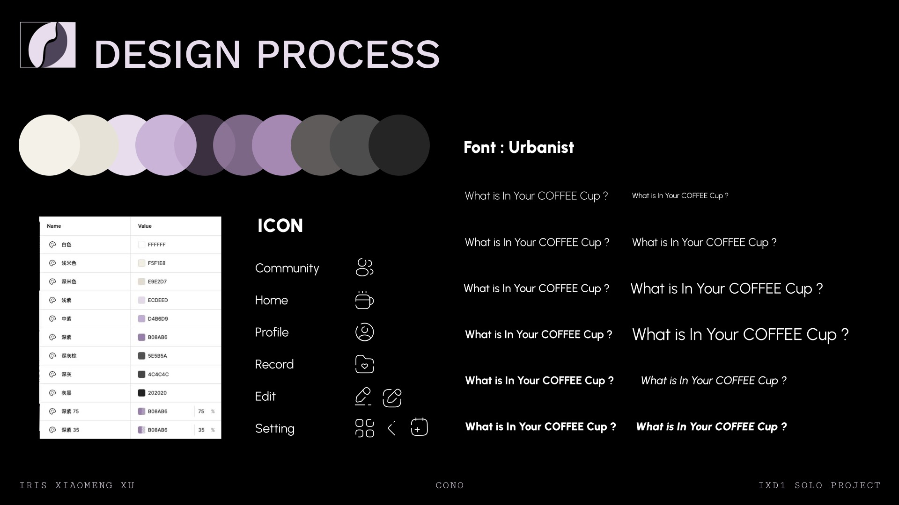
Final Design
On Boarding
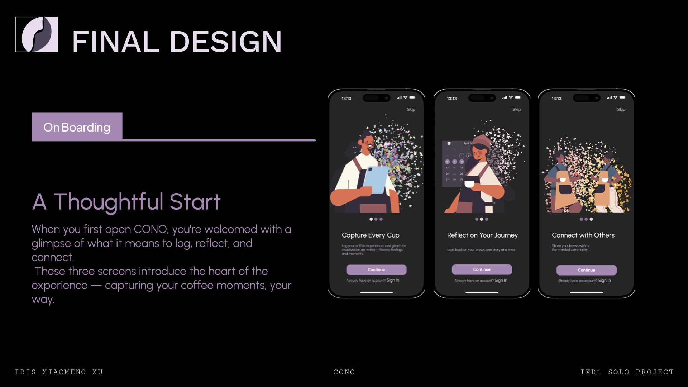
Log New Brew
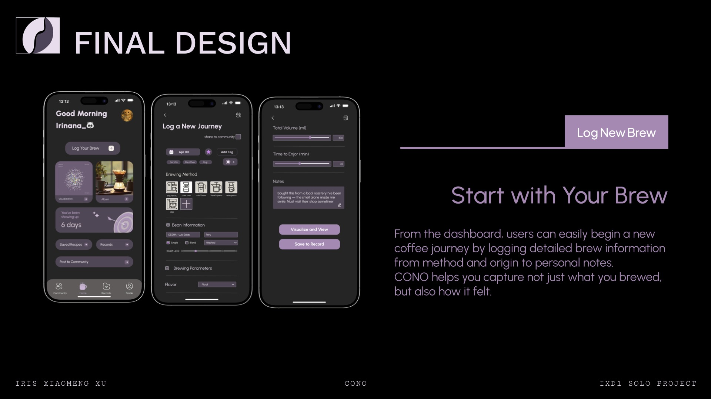
Profile
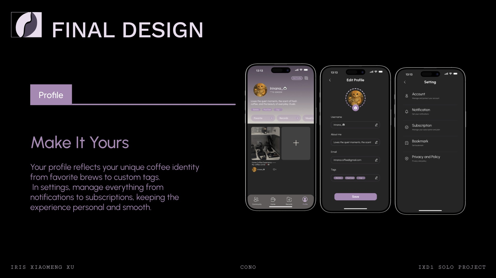
Community
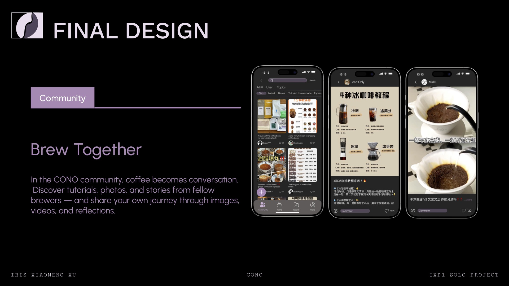
Share
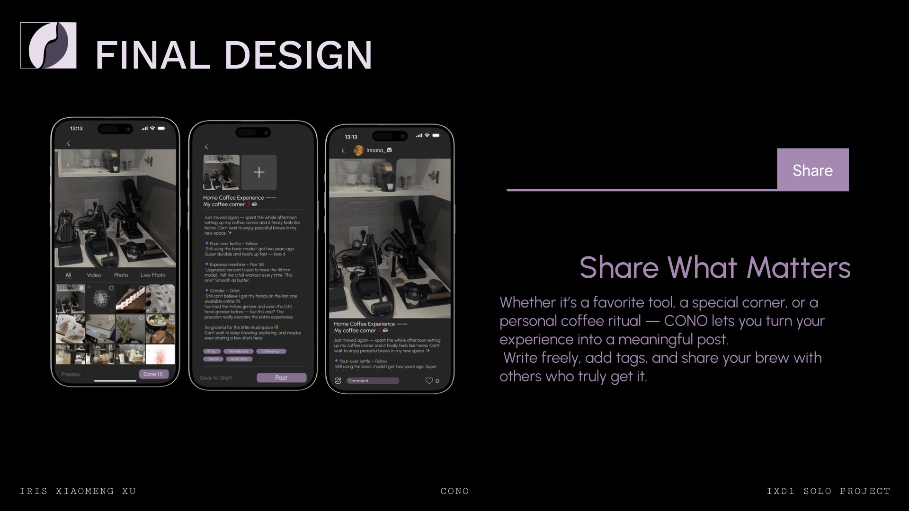
Records
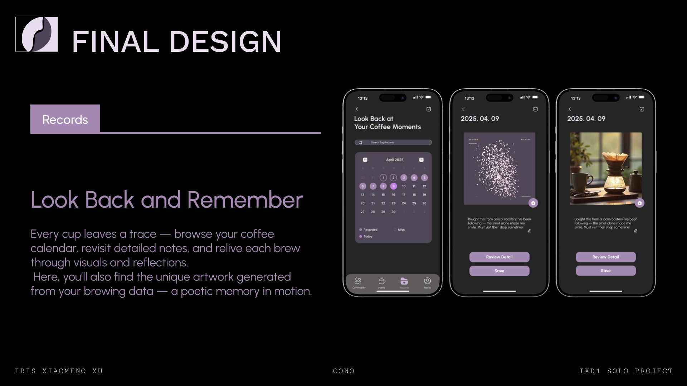
Designer Notes
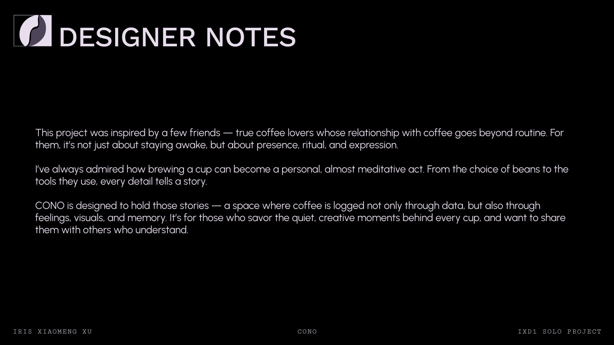